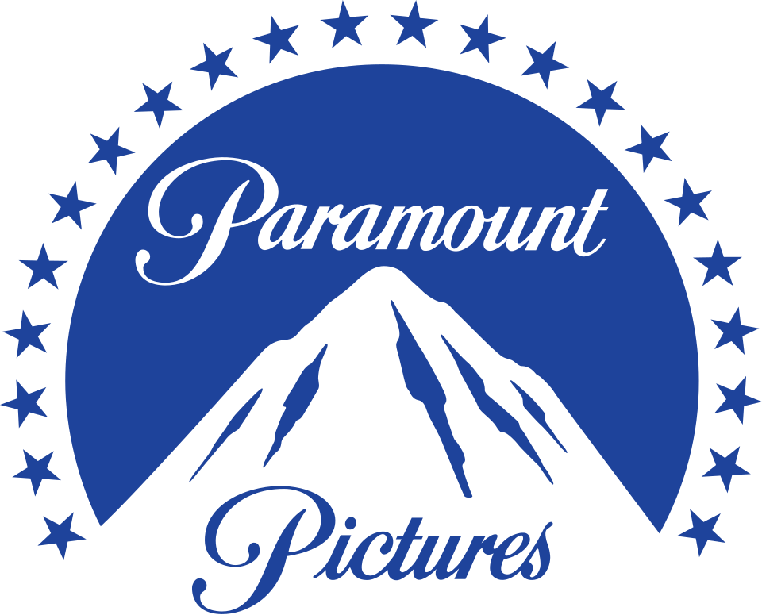

뉴 라인 시네마 New Line Cinema
뉴 라인 시네마(New Line Cinema)는 로스앤젤레스에 본사를 둔 미국의 영화 제작 스튜디오이자 배급사이다. 현재 제작 영화는 워너 브라더스를 통해 배급한다.
최종 업데이트
뉴 라인 시네마는 어떤 브랜드인가
뉴 라인 시네마는 영화 배급회사로 출발해 영화 제작과 배급을 함께 수행한 미국 스튜디오이다. 한동안 독립회사로 운영했으나 1994년 터너 브로드캐스팅 시스템에 인수됐다.
1996년 터너 방송사와 엔터테인먼트 그룹이 타임 워너에 통합되면서 엔터테인먼트 부문 계열사가 됐다. 2001년 전 세계 흥행 28억 달러를 기록한 《반지의 제왕 시리즈》를 제작했다.
2005년부터 제작 영화의 연이은 흥행 실패로 부채비율이 늘어나 재정난을 겪었다. 2008년 2월 28일 파산 후 워너 브라더스에 인수돼 자회사로 합류했다.
뉴 라인 시네마는 어떻게 시작되고 성장했나
뉴 라인 시네마는 1967년 Robert Shaye와 Michael Lynne가 설립했으며, 당시 27세였던 Robert Shaye는 회사를 영화 배급사로 출범했다. 독립회사로 운영되다가 1994년 1월 28일 터너 브로드캐스팅 시스템에 인수됐다.
1996년 터너 브로드캐스팅 시스템이 타임 워너에 통합되면서 타임 워너 엔터테인먼트 부문의 계열사로 합류했다. 2001년 《반지의 제왕 시리즈》의 흥행으로 인지도를 높였지만, 2005년 이후 제작 영화의 흥행 실패와 부채 증가로 파산 위기에 직면했다.
결국 2008년 2월 28일 파산하고 워너 브라더스의 자회사로 합류했다.
뉴 라인 시네마의 브랜드 아이덴티티는 무엇인가
독립 영화 배급사로 출발해 제작 스튜디오로 확장했으며, 《반지의 제왕 시리즈》를 주요 제작 성과로 보유한다.
뉴 라인 시네마의 대표 제품과 서비스는 무엇인가
뉴 라인 시네마는 지금 어떤 상태인가
뉴 라인 시네마 로고는 어떻게 변해왔나
자주 묻는 질문
뉴 라인 시네마는 어느 나라 브랜드인가요?
뉴 라인 시네마는 미국의 미디어·엔터테인먼트 브랜드입니다.
뉴 라인 시네마는 언제 설립되었나요?
뉴 라인 시네마는 1967년 설립되었습니다.
뉴 라인 시네마의 브랜드 아이덴티티는 무엇인가요?
독립 영화 배급사로 출발해 제작 스튜디오로 확장했으며, 《반지의 제왕 시리즈》를 주요 제작 성과로 보유한다.
뉴 라인 시네마의 대표 제품은 무엇인가요?
뉴 라인 시네마는 영화 배급회사로 시작한 뒤 영화 제작 스튜디오와 배급사의 기능을 함께 수행한다.
뉴 라인 시네마는 어느 기업이 소유하고 있나요?
뉴 라인 시네마는 2008년 파산 후 워너 브라더스에 인수돼 자회사로 편입됐다.
뉴 라인 시네마의 창업자는 누구인가요?
뉴 라인 시네마의 창업자는 로버트 셰이, Michael Lynne입니다(위키데이터 기준).
뉴 라인 시네마의 본사는 어디에 있나요?
뉴 라인 시네마의 본사는 로스앤젤레스에 있습니다(위키데이터 기준).
출처와 검증
뉴 라인 시네마 관련 참고: 공식 웹사이트 · 위키데이터 Q79202 · 한국어 위키백과 · 영어 위키백과. 브랜드명은 한글과 원어를 함께 표기하되 데이터에 없는 표기는 만들지 않습니다. 기원 국가·설립연도는 검수된 정의문에서 확인된 값을 우선하고, 없을 때만 공식 웹사이트 URL이 일치하는 위키데이터 개체의 값을 씁니다. 탄생일의 월·일은 위키데이터, 위키백과 정보상자, 본문 가운데 같은 연월로 확인되는 값만 싣고, 출처끼리 다르면 싣지 않습니다. 웹 첫 보관은 인터넷 아카이브가 공식 사이트 첫 화면을 처음 보관한 날로, 사이트 개설일과 다를 수 있습니다. 위키데이터 값은 2026-09-20 기준입니다.
6월에 태어난 브랜드
함께 읽을 브랜드
 워너 브라더스Warner Bros. Entertainment미디어·엔터테인먼트
워너 브라더스Warner Bros. Entertainment미디어·엔터테인먼트 유니버설 픽처스Universal Pictures미디어·엔터테인먼트
유니버설 픽처스Universal Pictures미디어·엔터테인먼트 워너 브라더스 디스커버리Warner Bros. Discovery미디어·엔터테인먼트
워너 브라더스 디스커버리Warner Bros. Discovery미디어·엔터테인먼트 메트로 골드윈 메이어Metro-Goldwyn-Mayer미디어·엔터테인먼트워너미디어WarnerMedia미디어·엔터테인먼트드림웍스 픽처스DreamWorks미디어·엔터테인먼트
메트로 골드윈 메이어Metro-Goldwyn-Mayer미디어·엔터테인먼트워너미디어WarnerMedia미디어·엔터테인먼트드림웍스 픽처스DreamWorks미디어·엔터테인먼트
파라마운트 픽처스Paramount Pictures미디어·엔터테인먼트 뉴스 코퍼레이션News Corporation미디어·엔터테인먼트
뉴스 코퍼레이션News Corporation미디어·엔터테인먼트